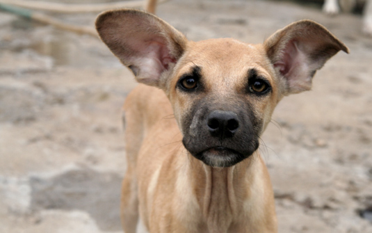
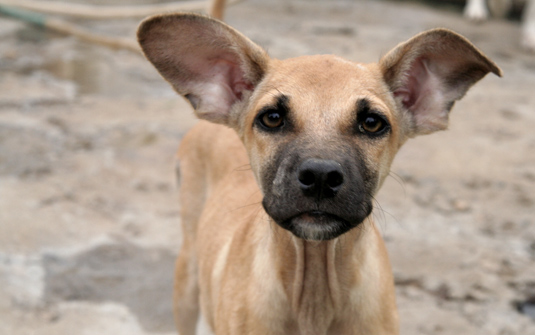
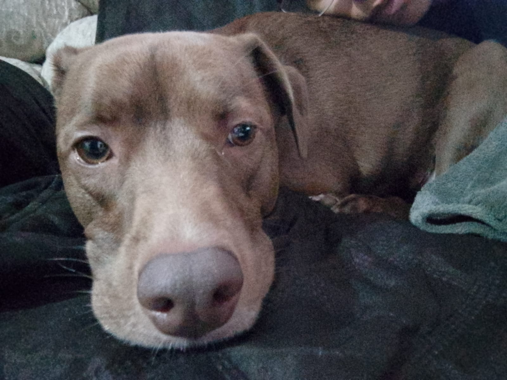
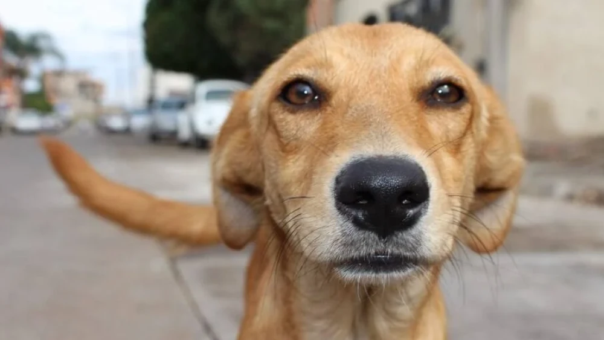
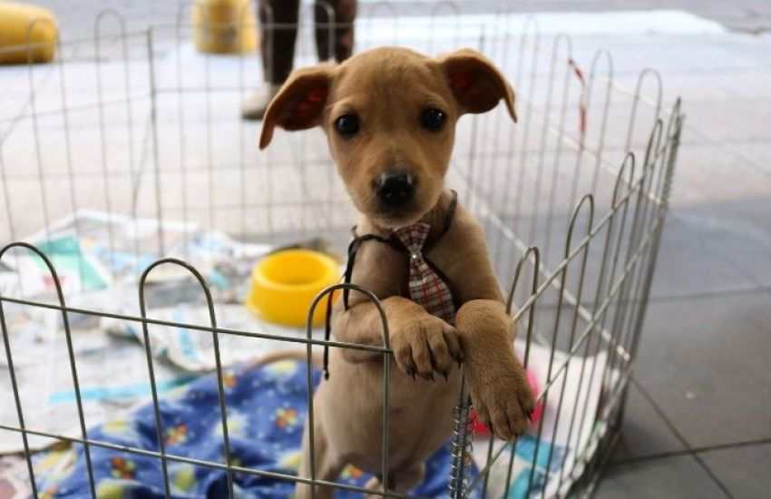

Omeprazol - Vira Lata
Macho, 1 ano, vacinado e castrado
O Patinhas Amigas nasceu com o propósito de conectar animais que precisam de um lar a pessoas dispostas a oferecer amor e cuidado. Acreditamos que cada vida importa — por isso, trabalhamos para resgatar, cuidar e promover a adoção responsável de cães e gatos em situação de abandono.
Nossa missão é criar uma rede de empatia, conscientizando a sociedade sobre a importância da proteção animal. Com a ajuda de voluntários, parceiros e adotantes, transformamos histórias de sofrimento em finais felizes.
Se você também acredita que amor não se compra, junte-se a nós nessa causa. 💛
Macho, 1 ano, vacinado e castrado
Fêmea, 3 anos, vacinado e castrada
Macho, 6 anos, vacinado e castrado
Macho, 5 meses, vacinado
"Adotar o Omeprazol foi a melhor decisão da minha vida! Ele trouxe alegria para nossa casa."- Maria Silva, adotante há 6 meses
"A equipe da Patinhas Amigas foi incrível em todo processo. Nosso Molly é parte da família!"- João Santos, adotante há 1 ano